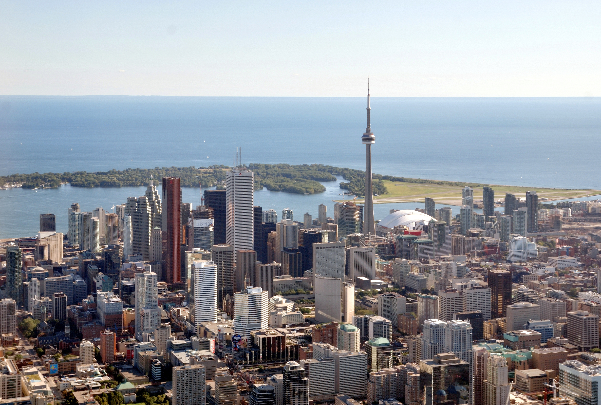
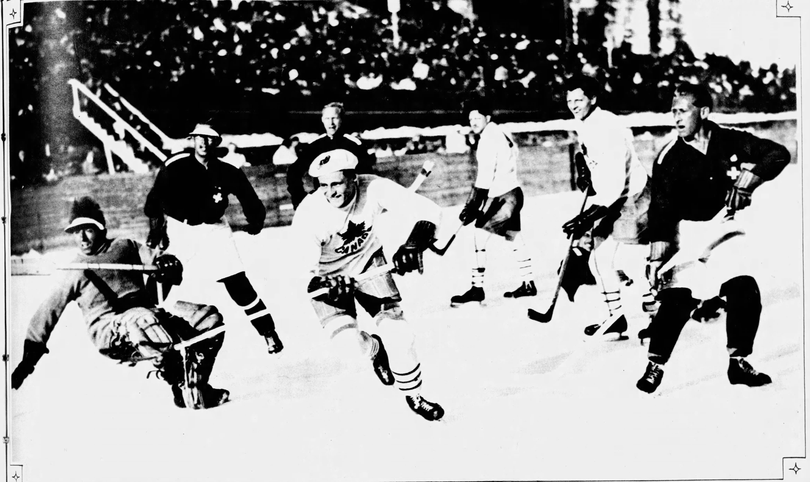
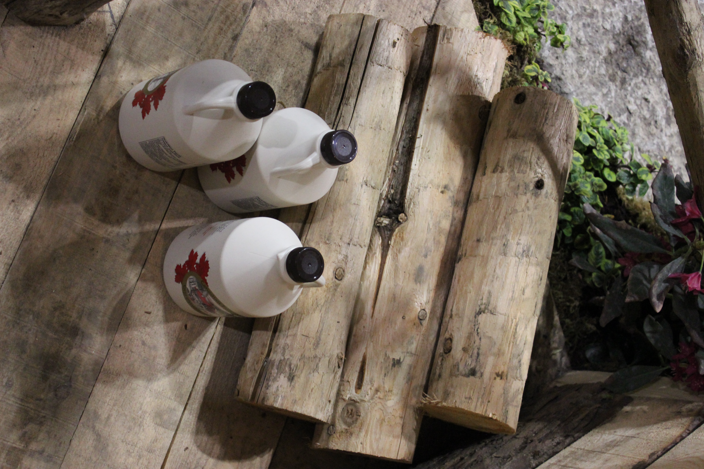
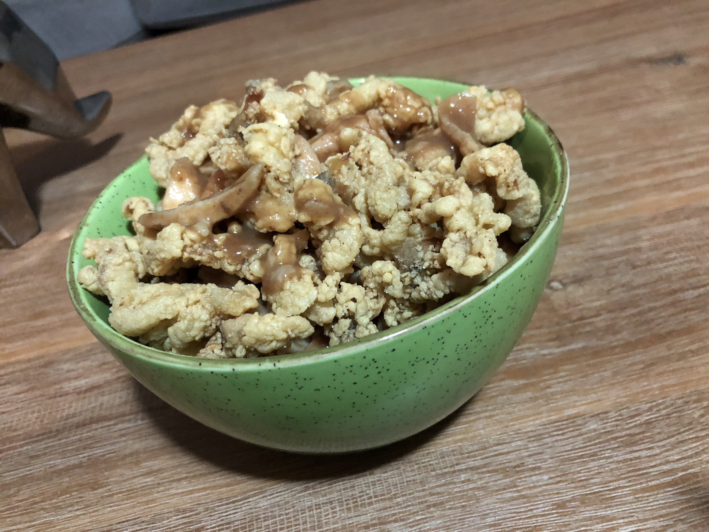
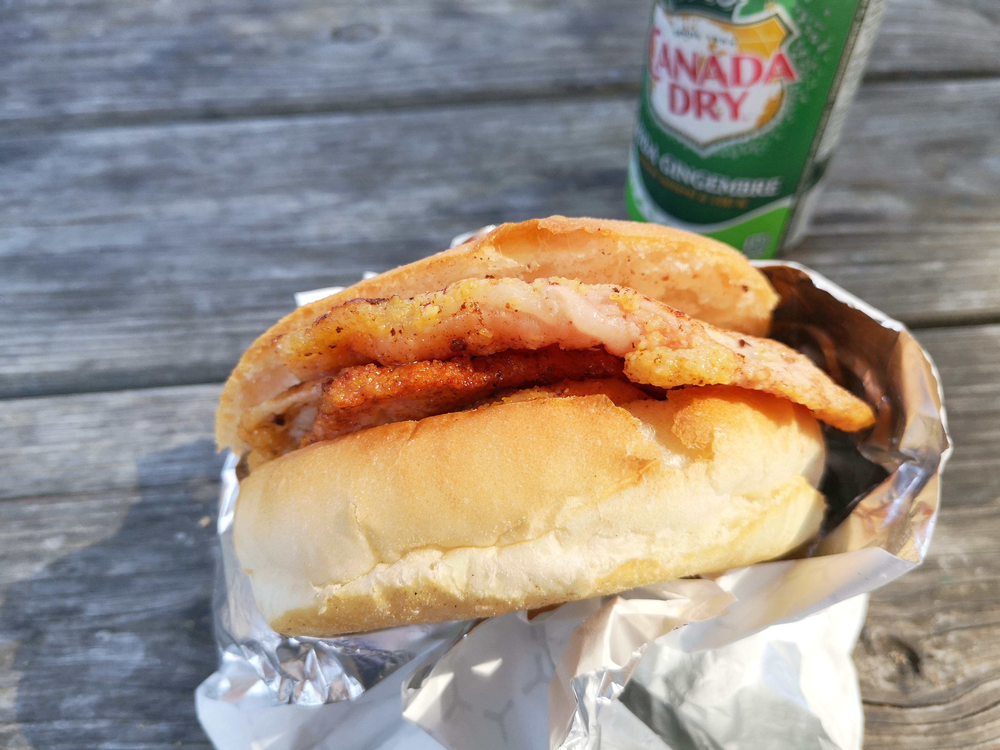
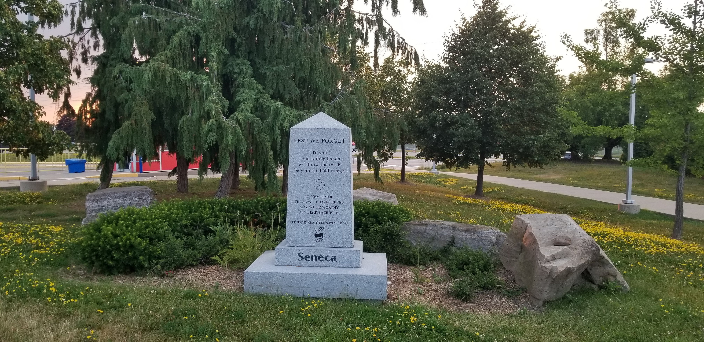

Welcome to Seneca Polytechnic Intranet
Located in Toronto, Ontario, Canada. Connected via ZeroTier SD-WAN and encrypted HTTPS to our international partners at Universidad de los Llanos (Villavicencio, Colombia).
Toronto Metropolis & Landmarks
CN Tower & Downtown Skyline
Standing at 553.3 meters along Lake Ontario, the CN Tower defines the Toronto skyline. Toronto is one of the most culturally diverse metropolises in North America, with over 200 distinct ethnic origins and vibrant multicultural neighborhoods.

Lake Ontario & Toronto Islands
Just minutes from downtown by ferry, the Toronto Islands offer tranquil green spaces, car-free bicycle trails, and panoramic sunset views back toward the bustling financial core and harborfront promenade.
Canadian Heritage & Winter Life

Ice Hockey & Outdoor Rinks
Hockey is woven into the Canadian identity. From neighborhood shinny games on frozen backyard ponds to cheering for the Toronto Maple Leafs at Scotiabank Arena, winter is celebrated outdoors with skates, sticks, and cold-weather camaraderie.

Maple Syrup & Sugar Shacks
Every spring as days warm above freezing, sugar maples across Ontario and Quebec are tapped. The sap is boiled down into pure golden maple syrup, celebrated at local sugar shacks with fresh hot syrup poured directly over clean snow to form maple taffy.
Canadian Culinary Classics

Authentic Poutine
Originating in Quebec in the late 1950s, classic poutine features hot, crispy hand-cut french fries topped with fresh squeaky cheddar cheese curds and smothered in a rich, piping-hot savory brown gravy that slightly melts the cheese.

Peameal Bacon & Butter Tarts
A Toronto staple: wet-cured lean pork loin rolled in ground cornmeal, sliced thick and grilled on a soft bun at St. Lawrence Market. For dessert, traditional butter tarts with a flaky pastry crust and gooey brown sugar filling.
Academic & Telecommunications Partnership

School of Information Technology
Seneca Polytechnic prepares students in computer networking, cloud architectures, cybersecurity, and telecommunications through applied project-based learning and international collaborative partnerships.
UniLlanos • Seneca COIL Exchange
Bridging geographical distance through Software-Defined Wide Area Networking. This joint initiative connects engineering students across the Americas, validating encrypted communications, DNS service delivery, and cross-cultural understanding.